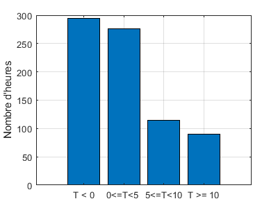

Novembre à Sherbrooke
Contents
clear; clc; close all; T = readmatrix('Nov2010matrice.xls'); % Remarque : les indices i et j sont une % convention en maths pour identifier un élément % de matrice comme T(i,j). % % Préférer les variables i et j aux autres noms % pour les boucles manipulant des matrices.
Jour et heure où T est la plus basse du mois
imin=1;jmin=1; [nL,nc]=size(T); for i = 1:nL for j = 1:nc if(T(i,j)<T(imin,jmin)); imin = i; jmin = j; end end end fprintf(['Le %.0f novembre à %.0fh, ',... 'T = %.1f°C.\n'],imin, jmin, T(imin,jmin));
Le 1 novembre à 1h, T = NaN°C.
T moyenne du jour où T est la plus basse
Suite de l'étape précédente
somme = 0; for j = 1:nc somme = somme + T(imin,j); end fprintf('Moyenne du %.0f novembre = %.1f°C\n',... imin, somme/nc);
Moyenne du 1 novembre = NaN°C
Températures du mois en 4 classes
Compteur = [0 0 0 0]; for i = 1:nL for j = 1:nc if(T(i,j)<0) Compteur(1)=Compteur(1)+1; elseif(T(i,j)<5) Compteur(2)=Compteur(2)+1; elseif(T(i,j)<10) Compteur(3)=Compteur(3)+1; else Compteur(4)=Compteur(4)+1; end end end batons(Compteur)

donne 294, 276, 115 et 35.